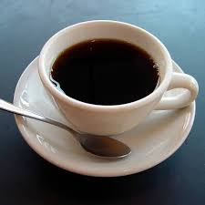

Bem-vindo à Melhor Cafeteria da Cidade!
Nossa cafeteria é reconhecida pelo delicioso café preto, feito com os melhores grãos selecionados da região. Além do ambiente aconchegante, oferecemos uma experiência única em cada xícara.
Venha nos visitar e prove as nossas especialidades de cafés e lanches preparados com carinho!
Localização
Estamos localizados no coração da cidade, com fácil acesso e um ambiente acolhedor para você relaxar.
Endereço: Rua do Café, 123 - Centro, Cidade Exemplo
Nosso Café Destaque
O café preto mais premiado da região, feito com grãos 100% orgânicos e moídos na hora. Experimente o sabor incomparável!
